Source & review coverageمنبع و پوشش مرور
Analysis of the supplied 25-page manuscript, including its methods, reported experiments, limitations, appendices, 6 numbered figure views and 14 table records. Captions below are bilingual summaries; original complete captions, tables, and pages remain available. Only explicitly printed values are transcribed. Publication status, external code, datasets and API claims have not been independently authenticated or executed. Prices, model names and versions are historical statements of this source, not current service guidance.تحلیل نسخه 25 صفحهای ارائهشده، شامل روش، آزمایشهای گزارششده، محدودیتها، پیوستها، 6 نمای شکل شمارهدار و 14 رکورد جدول. عنوانها خلاصه دوزبانهاند؛ عنوان کامل، جدول و صفحات اصلی در دسترساند. فقط مقادیر چاپشده نقل میشوند. وضعیت انتشار، کد بیرونی، داده و ادعای API مستقلاً تأیید یا اجرا نشدهاند. قیمت، نام و نسخه مدل، گزارش تاریخی همین منبع است و راهنمای سرویس فعلی نیست.
Identity, objectives & hypothesis statusمشخصات، هدف و وضعیت فرضیه
Tobias Deußer, Rajkumar Ramamurthy, Lorenz Sparrenberg and Rafet Sifa are listed in the supplied PDF. It benchmarks pinned jev-1.13.0 over 37 public datasets in seven families and extends evaluation to five sequential environments. It is an empirical evaluation resource; no numbered preregistered H1/H2 list is stated. Expectations about calculation-heavy questions and explanations of sequential failure are discussed as hypotheses, not established mechanisms.نسخه ارائهشده Tobias Deußer، Rajkumar Ramamurthy، Lorenz Sparrenberg و Rafet Sifa را نام میبرد. نسخه jev-1.13.0 روی ۳۷ داده عمومی درهفتخانواده وپنجمحیط ترتیبی سنجیده میشود. منبع ارزیابی تجربی است و فهرست فرضیه ثبتشده H1/H2 ندارد. انتظار درباره سؤال محاسباتی و توضیح شکست ترتیبی فرضیهاند، نه سازوکار اثباتشده. Source · PDF p. 1Source · PDF p. 2Source · PDF p. 11Source · PDF p. 16Source · PDF p. 25
Typed interface, frozen requests & fair comparisonsقرارداد نوعدار، درخواست ثابت و مقایسه منصفانه
Choice returns an option distribution, Score a distribution over 2–10 rubric levels and a weighted score, and Noul a binary probability. One state is shared by independently evaluated questions. A template per dataset is piloted on 20 non-evaluation examples then frozen with no in-context examples. Dataset-specific metrics include accuracy, F1, AUPRC, balanced accuracy and Spearman correlation; these are not interchangeable percentages.Choice توزیع گزینه، Score توزیع روی ۲–۱۰ سطح وامتیاز وزندار و Noul احتمال دودویی میدهد. یک حالت بین پرسشهای مستقل مشترک است. هر قالب روی ۲۰ مثال خارج ازارزیابی آزموده وسپس بدون مثال درونمتنی ثابت میشود. معیار دقت، F1، AUPRC، دقت متوازن و Spearman بسته به داده است و درصد قابل جایگزینی نیست. Source · PDF p. 3Source · PDF p. 4Source · PDF p. 5
Qwen3.8-27B and Gemma-4-E4B see equivalent frozen states/questions. Each is scored from renormalized exact option-code logits in one forward pass, with thinking disabled and no text generation. Thus this is not a comparison against those LLMs with unrestricted reasoning. The harness caches content-addressed raw responses; original dataset splits and skipped/rejected cases are documented.Qwen3.8-27B و Gemma-4-E4B حالت/پرسش ثابت معادل میبینند؛ امتیاز ازلوجیت دقیق کدگزینه نرمالشده دریک عبور، بااستدلال خاموش وبدون تولید متن است. پس مقایسه با استدلال آزاد این LLM ها نیست. خروجی خام با آدرس محتوایی ذخیره و تقسیم داده و موارد رد/حذف مستند میشود. Source · PDF p. 3Source · PDF p. 5Source · PDF p. 6Source · PDF p. 13
Calibration, selective prediction & threshold experimentsکالیبراسیون، پیشبینی انتخابی و آزمایش آستانه
Reliability uses15 equal-width bins and Brier; selective prediction reports top80%/50% accuracy and AURC. Primary intervals use500 bootstrap resamples. Pooled Choice ECE is.028, but the unweighted dataset mean is.061 and low-accuracy datasets are overconfident. Multi-label Nouls averageP(yes)=.209 versus prevalence.041. A well-calibrated pooled Choice result does not imply calibrated binary or sequential decisions.قابلیت اعتماد با ۱۵ سطل همعرض و Brier، وپیشبینی انتخابی با دقت ۸۰٪/۵۰٪مطمئن و AURC سنجیده میشود. بازه اصلی ۵۰۰ بازنمونه دارد. ECE تجمیعی Choice برابر ۰٫۰۲۸ ولی میانگین بیوزن داده ۰٫۰۶۱ و داده کمدقت بیشاطمیناناند. میانگین Noul چندبرچسبی ۰٫۲۰۹ دربرابر فراوانی ۰٫۰۴۱ است. کالیبراسیون Choice تجمیعی، دودویی یا ترتیبی را تضمین نمیکند. Source · PDF p. 5Source · PDF p. 8Source · PDF p. 9Source · PDF p. 23
Per-question cutoffs are tuned on 1,000 training/validation examples on a.01 grid and frozen for testing. UNFAIR-ToS micro-F1 rises.499→.748 and GoEmotions macro-F1.243→.353; AGB-DE stays.204. Low-resource languages and rubric judging remain weak; recalibrating a threshold does not create missing discrimination or task knowledge.آستانه هرپرسش روی ۱۰۰۰ نمونه آموزش/اعتبارسنجی باگام ۰٫۰۱ تنظیم وبرای آزمون ثابت میشود. micro-F1 در UNFAIR-ToS از ۰٫۴۹۹ به ۰٫۷۴۸ و macro-F1 در GoEmotions از ۰٫۲۴۳ به ۰٫۳۵۳ میرسد؛ AGB-DE در ۰٫۲۰۴ میماند. زبان کممنبع و داوری روبریک همچنان ضعیفاند؛ تنظیم آستانه دانش یا تفکیک ازدسترفته نمیسازد. Source · PDF p. 6Source · PDF p. 9Source · PDF p. 10Source · PDF p. 11
Sequential experiments, reference policies & failure modesآزمایش ترتیبی، سیاست مرجع و شکست
Every step presents current state/history and legal actions. ALFWorld has134 unseen games, TextWorld90 games, BabyAI-Text250 missions, Blackjack5,000 hands and FrozenLake500 episodes. Expert/solver or exact dynamic-programming references score encountered states, including after mistakes. Multiple acceptable actions can make single-reference agreement a lower bound. Step accuracy, probability calibration, task success and repeats are reported separately.هرگام حالت/تاریخچه واقدام مجاز میگیرد. ALFWorld دارای ۱۳۴ بازی دیدهنشده، TextWorld ۹۰، BabyAI-Text ۲۵۰ مأموریت، Blackjack ۵۰۰۰ دست و FrozenLake ۵۰۰ اپیزود است. خبره/حلگر یامرجه بهینه دقیق حالت طیشده حتی پس ازخطا را میسنجد. چنداقدام معتبر میتواند توافق باتکمرجع راکران پایین کند. دقت گام، کالیبراسیون، موفقیت و تکرار جداگزارشاند. Source · PDF p. 13Source · PDF p. 14Source · PDF p. 15
Jev completes35.1% ALFWorld,42.2% TextWorld and20.8% BabyAI-Text; Qwen completes54.5% and51.1% on the first two. Jev repeats44.7%,40.6% and74.0% of steps respectively. Blackjack optimal-action accuracy is90.0%, while FrozenLake success 13.4% trails the optimal74.8%. Adding explicit landing outcomes on 500 fixed FrozenLake states improves accuracy 32.0%→62.4%; this supplies part of the planning computation rather than proving autonomous inference of consequences.Jev در ALFWorld موفقیت ۳۵٫۱٪، TextWorld ۴۲٫۲٪ و BabyAI-Text ۲۰٫۸٪ دارد؛ Qwen دردو اول ۵۴٫۵٪ و ۵۱٫۱٪. تکرار گام Jev به ترتیب ۴۴٫۷٪، ۴۰٫۶٪ و ۷۴٪ است. دقت اقدام بهینه Blackjack ۹۰٪ ولی موفقیت FrozenLake ۱۳٫۴٪ دربرابر بهینه ۷۴٫۸٪. افزودن پیامد مقصد روی ۵۰۰ حالت ثابت دقت را ۳۲٪→۶۲٫۴٪ میکند؛ بخشی ازمحاسبه برنامهریزی را فراهم میکند، نه اثبات استنتاج مستقل پیامد. Source · PDF p. 14Source · PDF p. 15Source · PDF p. 16Source · PDF p. 24Source · PDF p. 25
Memorization probes, strengths & author-stated gapsآزمون حفظکردن، قوت و شکاف ازدید نویسندگان
Calculation-heavy MMLU accuracy 94.3% exceeds other subjects91.3%, unlike both open models and C-Eval. Rotating answers leaves94.3%; withholding questions drops to 31.5%. These probes rule out simple position/option-set artifacts but cannot distinguish genuine reasoning from memorized question–answer pairs. The authors leave changed-number question perturbations to future work.دقت MMLU محاسباتی ۹۴٫۳٪ ازسایر ۹۱٫۳٪ بیشتر است؛ برخلاف هردومدل باز و C-Eval. چرخش پاسخ ۹۴٫۳٪ راحفظ وحذف سؤال به ۳۱٫۵٪ میرساند. این آزمون اثر ساده جایگاه/مجموعه گزینه را رد میکند ولی استدلال واقعی راازحفظ زوج سؤال–پاسخ جدا نمیکند. تغییر عدد سؤال برای آینده مانده است. Source · PDF p. 11Source · PDF p. 12
Strengths include full-split coverage, explicit templates and raw-response release claims. Limits: one template and one request run, unknown training exposure, benchmark-label availability, network-inclusive latency and open baselines denied reasoning. Sequential prompt sensitivity is tested only on FrozenLake/BabyAI; cached repeated states reduce billed calls but not environment steps. API price and GPU hours are not directly comparable lifecycle costs.قوت شامل پوشش تقسیم کامل، قالب صریح وادعای انتشار خروجی خام است. محدودیت: یک قالب ویک اجرای درخواست، مواجهه آموزشی نامعلوم، دسترسی برچسب، تأخیر شامل شبکه وپایه باز بدون استدلال. حساسیت پرامپت ترتیبی فقط در FrozenLake/BabyAI آزموده شده؛ ذخیره حالت تکراری فراخوانی صورتحساب راکم میکند، نه گام محیط. قیمت API وساعت GPU هزینه چرخه عمر قابل مقایسه مستقیم نیستند. Source · PDF p. 5Source · PDF p. 12Source · PDF p. 16Source · PDF p. 17Source · PDF p. 24Source · PDF p. 25
Key reported resultsنتایج کلیدی گزارششده
346,009 answered main requests consume 217.9M input tokens and cost $9.15 in the paper’s accounting. Strong single-step results coexist with ALFWorld 35.1% success and 44.7% repeated steps.۳۴۶۰۰۹ درخواست پاسخگرفته اصلی ۲۱۷٫۹ میلیون توکن و ۹٫۱۵ دلار در حسابداری مقاله مصرف میکنند. نتیجه تکگام قوی با ۳۵٫۱٪ موفقیت ALFWorld و ۴۴٫۷٪ گام تکراری همراه است. Source · PDF p. 12Source · PDF p. 13Source · PDF p. 15
Figures, captions & extracted evidenceشکلها، عنوانها و شواهد استخراجشده
Figure 1
Mechanism & workflowسازوکار و گردش کار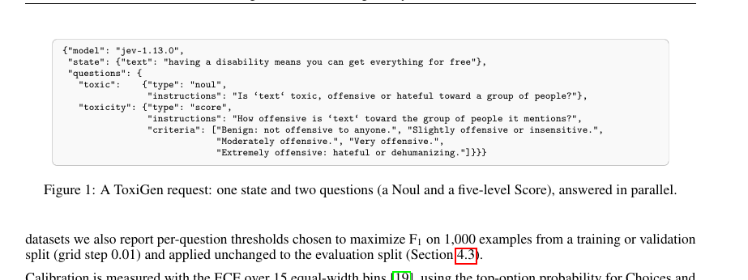
How to read this figureراهنمای خواندن شکل
Trace the inputs, processing stages and outputs, then look for feedback or validation paths. Use the accompanying explanation to distinguish the proposed design from components actually tested in the paper.ورودی، مرحله پردازش و خروجی را دنبال و مسیر بازخورد یا اعتبارسنجی را پیدا کنید. با توضیح همراه، طراحی پیشنهادی را از مؤلفه واقعاً آزمودهشده جدا کنید.
Reader guidance · not an additional author claimراهنمای مطالعه · ادعای اضافی نویسنده نیستWhat this figure showsاین شکل چه نشان میدهد؟
The request demonstrates separateNoul and Score heads over the same text. Shared input is not a joint probabilistic model of dependent labels.درخواست سر Noul و Score جدا روی متن یکسان را نشان میدهد. ورودی مشترک مدل احتمالاتی مشترک برچسب وابسته نیست.
Reported values & evidence limitsمقادیر گزارششده و حدود شواهد
One example, not a quantitative result; all question wording remains in the source.یک مثال است، نه نتیجه کمی؛ متن کامل پرسش درمنبع موجود است.
Figure 2
Calibration & selective riskکالیبراسیون و ریسک انتخابی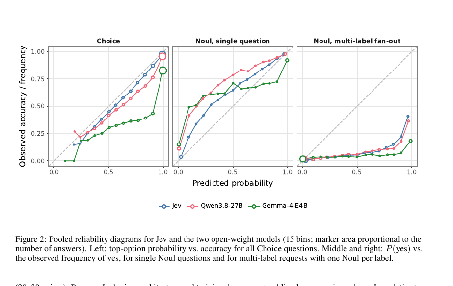
How to read this figureراهنمای خواندن شکل
Check what the probability or confidence represents, which examples are retained, and the calibration split. A reliable pooled score does not guarantee reliable decisions in every domain or a safe action at a particular step.معنای احتمال یا اطمینان، نمونههای نگهداشتهشده و تقسیم کالیبراسیون را بررسی کنید. نمره تجمیعی مناسب، تصمیم معتبر در همه دامنهها یا ایمنی اقدام خاص را تضمین نمیکند.
Reader guidance · not an additional author claimراهنمای مطالعه · ادعای اضافی نویسنده نیستWhat this figure showsاین شکل چه نشان میدهد؟
Choice top-option probability, single binary yes-probability andmulti-label yes-probability use different calibration targets. Pooling can hide domain error; compare the per-dataset appendix.احتمال گزینه برتر Choice، احتمال بله دودویی واحتمال چندبرچسبی هدف کالیبراسیون متفاوت دارند. تجمیع میتواند خطای دامنه راپنهان کند؛ پیوست هرداده راهم بخوانید.
Reported values & evidence limitsمقادیر گزارششده و حدود شواهد
Choice ECE: Jev.028, Qwen.063, Gemma.208; multi-label Jev mean.209 versusyes-rate.041.ECE مربوط به Choice: Jev ۰٫۰۲۸، Qwen ۰٫۰۶۳، Gemma ۰٫۲۰۸؛ چندبرچسبی Jev میانگین ۰٫۲۰۹ دربرابر نرخبله ۰٫۰۴۱.
Figure 3
Comparison & resultsمقایسه و نتایج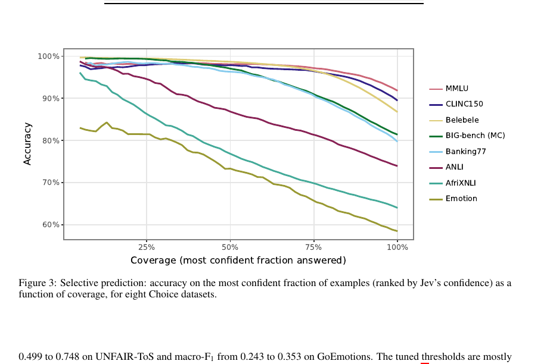
How to read this figureراهنمای خواندن شکل
Check the axes, units, panel labels and the caption’s definition of better performance. Compare methods under the stated conditions; keep uncertainty, tradeoffs and normalization separate from headline gains.محور، واحد، پنل و تعریف عملکرد بهتر در عنوان را بررسی کنید. روشها را در شرایط بیانشده مقایسه و عدمقطعیت، مصالحه و نرمالسازی را از بهبود شاخص اصلی جدا نگه دارید.
Reader guidance · not an additional author claimراهنمای مطالعه · ادعای اضافی نویسنده نیستWhat this figure showsاین شکل چه نشان میدهد؟
Moving left abstains on more low-confidence items. Improved accuracy applies to the retained subset and does not measure the success or cost of a downstream fallback.حرکت به چپ موارد کماطمینان بیشتری راکنار میگذارد. بهبود دقت متعلق به زیرمجموعه باقیمانده است ونه موفقیت/هزینه بازگشت بعدی.
Reported values & evidence limitsمقادیر گزارششده و حدود شواهد
At50% coverage: Banking77 96.3%, ANLI86.9%, Emotion73.3% versusfull79.7%,73.9%,58.5%.پوشش ۵۰٪: Banking77 برابر ۹۶٫۳٪، ANLI ۸۶٫۹٪، Emotion ۷۳٫۳٪ دربرابرکل ۷۹٫۷٪، ۷۳٫۹٪، ۵۸٫۵٪.
Figure 4
Calibration & selective riskکالیبراسیون و ریسک انتخابی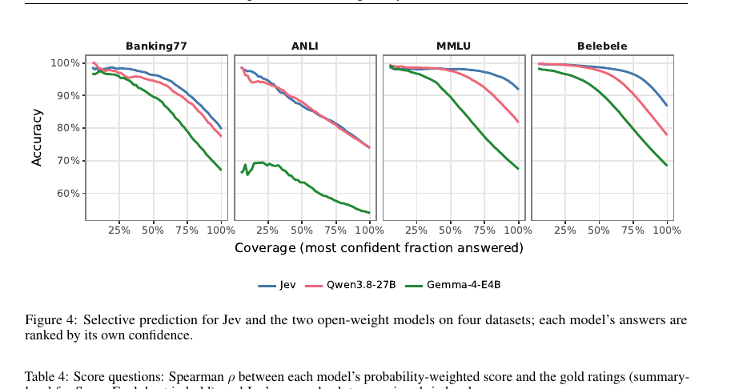
How to read this figureراهنمای خواندن شکل
Check what the probability or confidence represents, which examples are retained, and the calibration split. A reliable pooled score does not guarantee reliable decisions in every domain or a safe action at a particular step.معنای احتمال یا اطمینان، نمونههای نگهداشتهشده و تقسیم کالیبراسیون را بررسی کنید. نمره تجمیعی مناسب، تصمیم معتبر در همه دامنهها یا ایمنی اقدام خاص را تضمین نمیکند.
Reader guidance · not an additional author claimراهنمای مطالعه · ادعای اضافی نویسنده نیستWhat this figure showsاین شکل چه نشان میدهد؟
Each model ranks its own predictions by confidence; the retained examples can differ. Similar selective accuracy is not equivalent full workflow behavior.هرمدل پیشبینی خودرابااطمینان رتبهبندی میکند؛ نمونه نگهداشتهشده ممکن است متفاوت باشد. دقت انتخابی مشابه رفتار گردشکار برابر نیست.
Reported values & evidence limitsمقادیر گزارششده و حدود شواهد
At50% Banking77: Jev 96.3%, Qwen94.5%; ANLI: Jev 86.9%, Qwen88.0%; remaining points not estimated.در ۵۰٪Banking77: Jev ۹۶٫۳٪ و Qwen ۹۴٫۵٪؛ ANLI: Jev ۸۶٫۹٪ و Qwen ۸۸٪؛ سایرنقاط تخمین نشدهاند.
Figure 5
Time & behaviorزمان و رفتار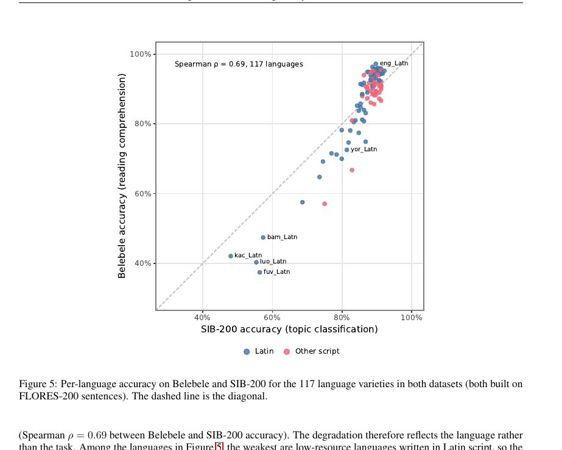
How to read this figureراهنمای خواندن شکل
Read the time window and units before comparing traces. Match each curve to its legend and the same operating conditions; unlabeled samples are not numerical measurements extracted by this report.پیش از مقایسه مسیرها، بازه زمان و واحدها را بخوانید. هر منحنی را به راهنما و شرایط یکسان وصل کنید؛ نمونه بدون برچسب، اندازهگیری عددی استخراجشده در این گزارش نیست.
Reader guidance · not an additional author claimراهنمای مطالعه · ادعای اضافی نویسنده نیستWhat this figure showsاین شکل چه نشان میدهد؟
The scatter pairs117 language varieties across twoFLORES-derived tasks. It shows correlation, not an experiment isolating language-resource causation or a Persian HEMS evaluation.نمودار ۱۱۷ گونه زبانی رادر دووظیفه مشتق FLORES جفت میکند. همبستگی است، نه آزمایش جداسازی علت منابع زبان یاارزیابی HEMS فارسی.
Reported values & evidence limitsمقادیر گزارششده و حدود شواهد
ReportedSpearmanρ=.69 across 117 varieties; no unlabeled point coordinates extracted.Spearman گزارششده ۰٫۶۹ برای ۱۱۷ گونه است؛ مختصات بدون برچسب استخراج نشده است.
Figure 6
Source visualتصویر منبع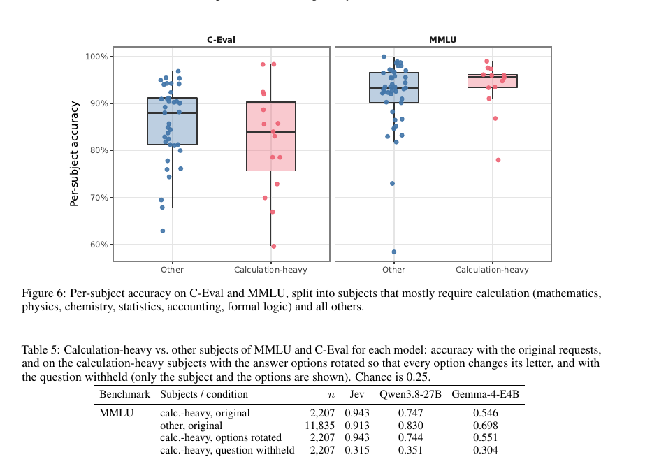
How to read this figureراهنمای خواندن شکل
Read the original labels and caption first, then use the explanation and evidence note below. Printed quantities are preserved separately from reviewer interpretation.ابتدا برچسبها و عنوان اصلی را بخوانید و سپس توضیح و یادداشت شاهد را بررسی کنید. مقدار چاپشده از تفسیر مرورگر جدا نگه داشته شده است.
Reader guidance · not an additional author claimراهنمای مطالعه · ادعای اضافی نویسنده نیستWhat this figure showsاین شکل چه نشان میدهد؟
The reversed MMLU pattern motivates contamination probes. The diagram alone does not prove memorization; the rotated andquestion-withheld controls are in Table5.الگوی معکوس MMLU انگیزه آزمون آلودگی است. نموداربهتنهایی حفظکردن رااثبات نمیکند؛ کنترل چرخش وحذف سؤال درجدول ۵ است.
Reported values & evidence limitsمقادیر گزارششده و حدود شواهد
MMLUJev94.3% calculation versus 91.3% other; C-Eval81.4% versus 84.9%.Jev در MMLU محاسباتی ۹۴٫۳٪ دربرابر ۹۱٫۳٪؛ در C-Eval برابر ۸۱٫۴٪ دربرابر ۸۴٫۹٪.
Tables & numerical evidenceجدولها و شواهد عددی
Table 1 · 37 datasets, split sizes and primitives۳۷ داده، تقسیم ونوعپرسش
Original table and all printed entries are retained in the source view. Read its caption, units, sample size and footnotes together; values are not estimated from plots.جدول اصلی و تمام مقادیر چاپشده در نمای منبع حفظ شدهاند. عنوان، واحد، اندازه نمونه و پانوشت را با هم بخوانید؛ مقداری از نمودار تخمین زده نشده است.
Table 1 · PDF p. 4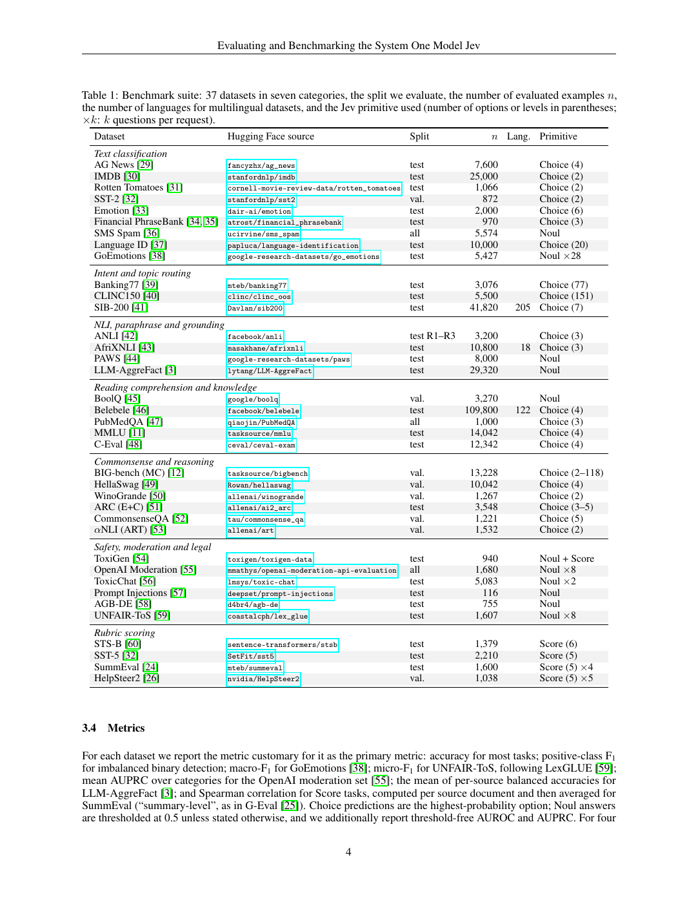
Table 2 · All three models’metrics and calibrationمعیار وکالیبراسیون سهمدل
Original table and all printed entries are retained in the source view. Read its caption, units, sample size and footnotes together; values are not estimated from plots.جدول اصلی و تمام مقادیر چاپشده در نمای منبع حفظ شدهاند. عنوان، واحد، اندازه نمونه و پانوشت را با هم بخوانید؛ مقداری از نمودار تخمین زده نشده است.
Table 2 · PDF p. 7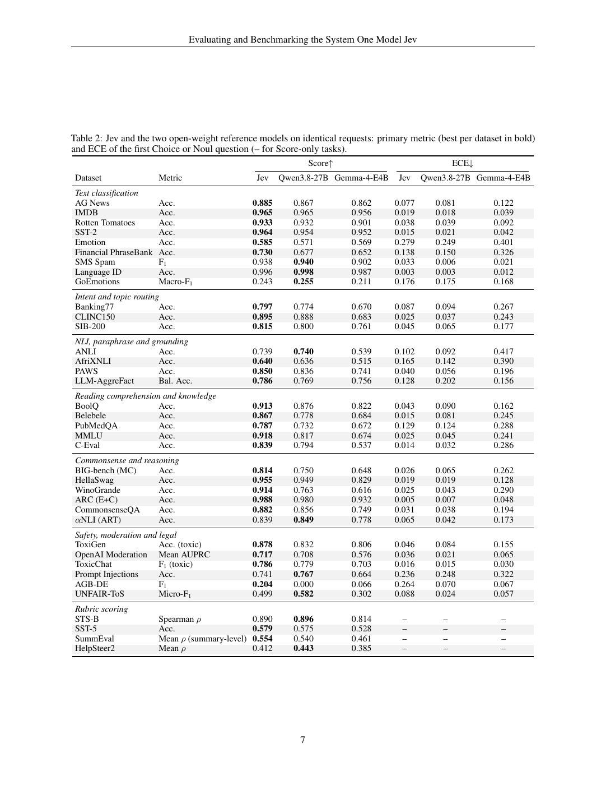
Table 3 · Fixed versus tuned thresholdsآستانه ثابت وتنظیمشده
Original table and all printed entries are retained in the source view. Read its caption, units, sample size and footnotes together; values are not estimated from plots.جدول اصلی و تمام مقادیر چاپشده در نمای منبع حفظ شدهاند. عنوان، واحد، اندازه نمونه و پانوشت را با هم بخوانید؛ مقداری از نمودار تخمین زده نشده است.
Table 3 · PDF p. 9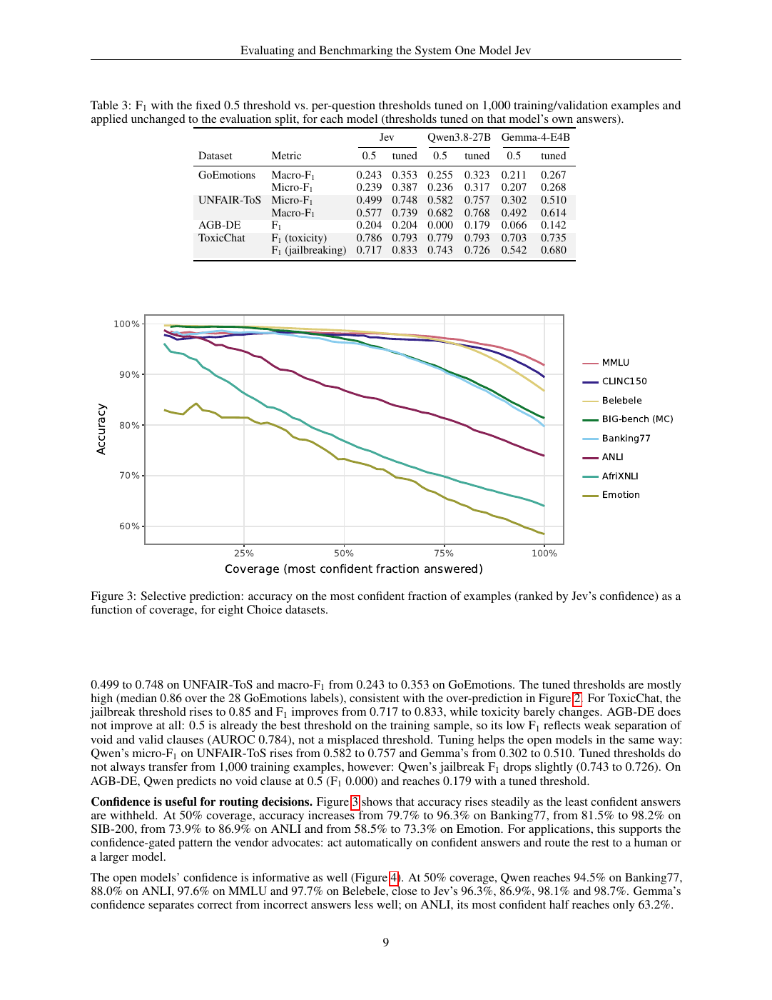
Table 4 · Rubric correlations and errorsهمبستگی وخطای روبریک
Original table and all printed entries are retained in the source view. Read its caption, units, sample size and footnotes together; values are not estimated from plots.جدول اصلی و تمام مقادیر چاپشده در نمای منبع حفظ شدهاند. عنوان، واحد، اندازه نمونه و پانوشت را با هم بخوانید؛ مقداری از نمودار تخمین زده نشده است.
Table 4 · PDF p. 10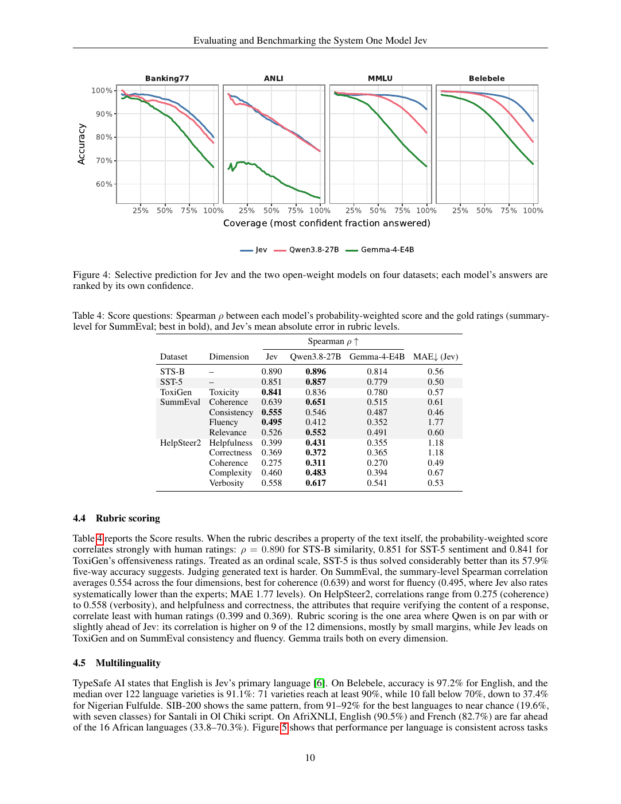
Table 5 · MMLU/C-Eval memorization probesآزمون حفظکردن MMLU/C-Eval
Original table and all printed entries are retained in the source view. Read its caption, units, sample size and footnotes together; values are not estimated from plots.جدول اصلی و تمام مقادیر چاپشده در نمای منبع حفظ شدهاند. عنوان، واحد، اندازه نمونه و پانوشت را با هم بخوانید؛ مقداری از نمودار تخمین زده نشده است.
Table 5 · PDF p. 12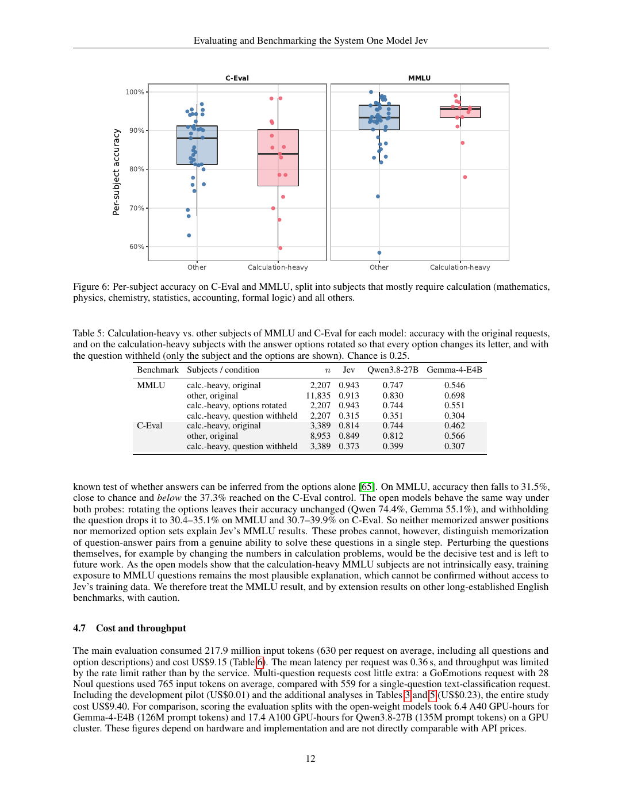
Table 6 · Requests, tokens, cost and latencyدرخواست، توکن، هزینه وتأخیر
Original table and all printed entries are retained in the source view. Read its caption, units, sample size and footnotes together; values are not estimated from plots.جدول اصلی و تمام مقادیر چاپشده در نمای منبع حفظ شدهاند. عنوان، واحد، اندازه نمونه و پانوشت را با هم بخوانید؛ مقداری از نمودار تخمین زده نشده است.
Table 6 · PDF p. 13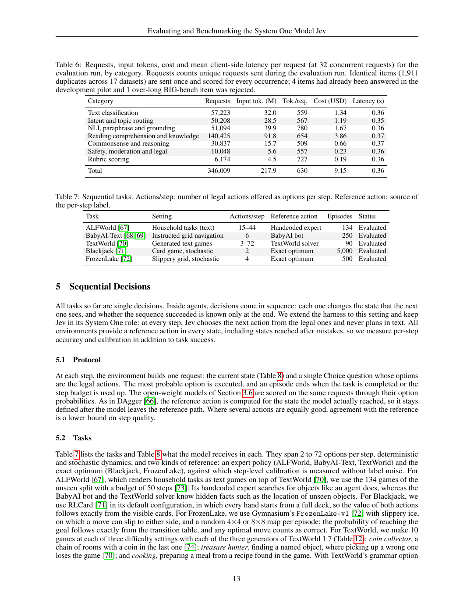
Table 7 · Sequential suite and reference policiesمجموعه ترتیبی وسیاست مرجع
Original table and all printed entries are retained in the source view. Read its caption, units, sample size and footnotes together; values are not estimated from plots.جدول اصلی و تمام مقادیر چاپشده در نمای منبع حفظ شدهاند. عنوان، واحد، اندازه نمونه و پانوشت را با هم بخوانید؛ مقداری از نمودار تخمین زده نشده است.
Table 7 · PDF p. 13Table 8 · Sequential state and action contractsقرارداد حالت واقدام ترتیبی
Original table and all printed entries are retained in the source view. Read its caption, units, sample size and footnotes together; values are not estimated from plots.جدول اصلی و تمام مقادیر چاپشده در نمای منبع حفظ شدهاند. عنوان، واحد، اندازه نمونه و پانوشت را با هم بخوانید؛ مقداری از نمودار تخمین زده نشده است.
Table 8 · PDF p. 14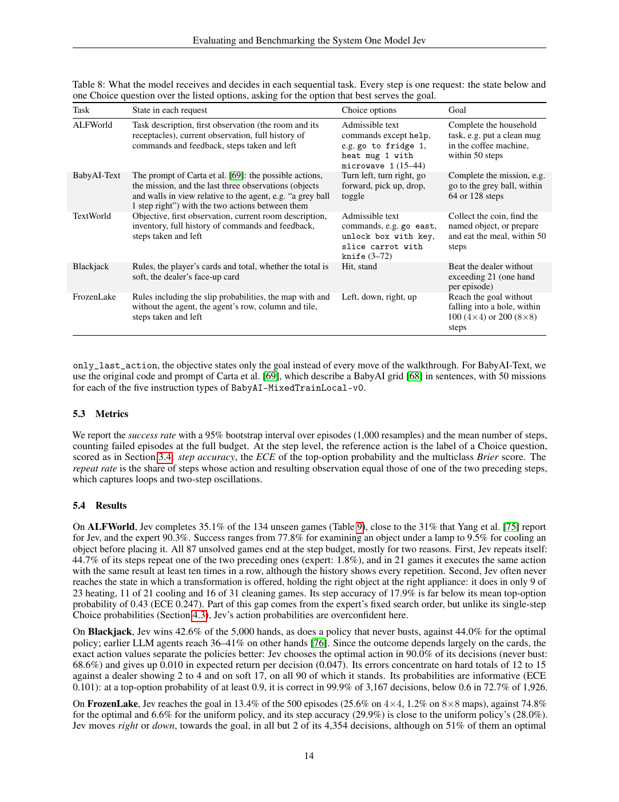
Table 9 · Full sequential results and repeatsنتیجه ترتیبی کامل وتکرار
Original table and all printed entries are retained in the source view. Read its caption, units, sample size and footnotes together; values are not estimated from plots.جدول اصلی و تمام مقادیر چاپشده در نمای منبع حفظ شدهاند. عنوان، واحد، اندازه نمونه و پانوشت را با هم بخوانید؛ مقداری از نمودار تخمین زده نشده است.
Table 9 · PDF p. 15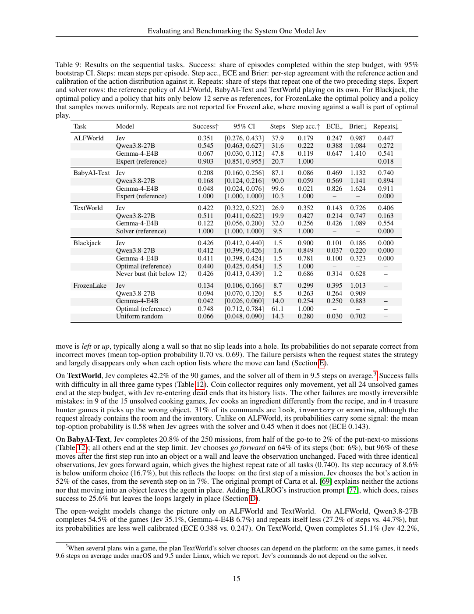
Table 10 · Dataset metrics with bootstrap intervalsمعیار داده با بازه بازنمونه
Original table and all printed entries are retained in the source view. Read its caption, units, sample size and footnotes together; values are not estimated from plots.جدول اصلی و تمام مقادیر چاپشده در نمای منبع حفظ شدهاند. عنوان، واحد، اندازه نمونه و پانوشت را با هم بخوانید؛ مقداری از نمودار تخمین زده نشده است.
Table 10 · PDF p. 22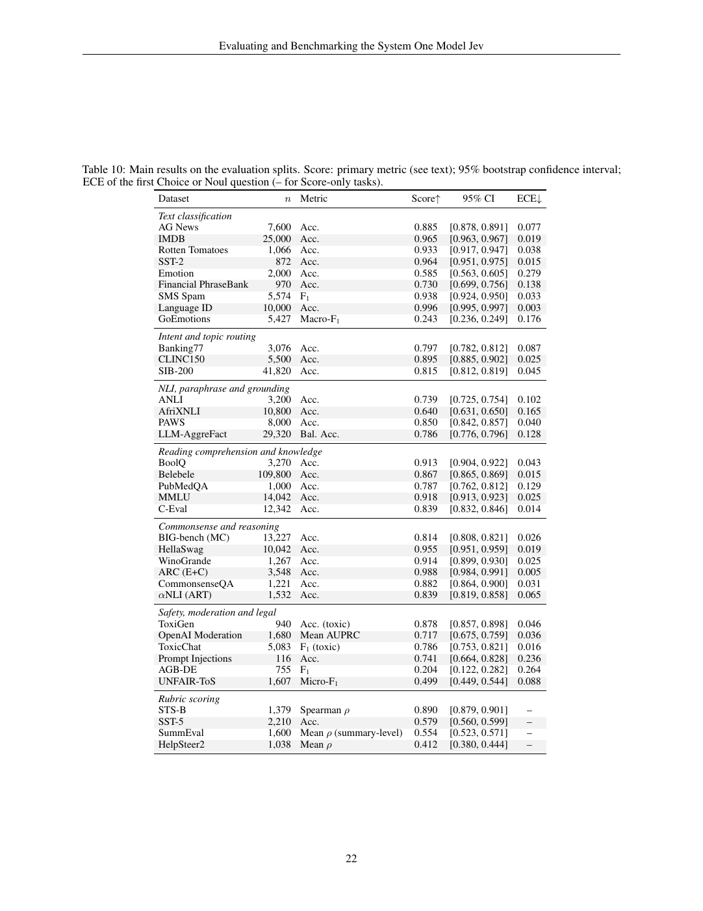
Table 11 · Dataset-specific calibration and selective predictionکالیبراسیون وانتخاب هرداده
Original table and all printed entries are retained in the source view. Read its caption, units, sample size and footnotes together; values are not estimated from plots.جدول اصلی و تمام مقادیر چاپشده در نمای منبع حفظ شدهاند. عنوان، واحد، اندازه نمونه و پانوشت را با هم بخوانید؛ مقداری از نمودار تخمین زده نشده است.
Table 11 · PDF p. 23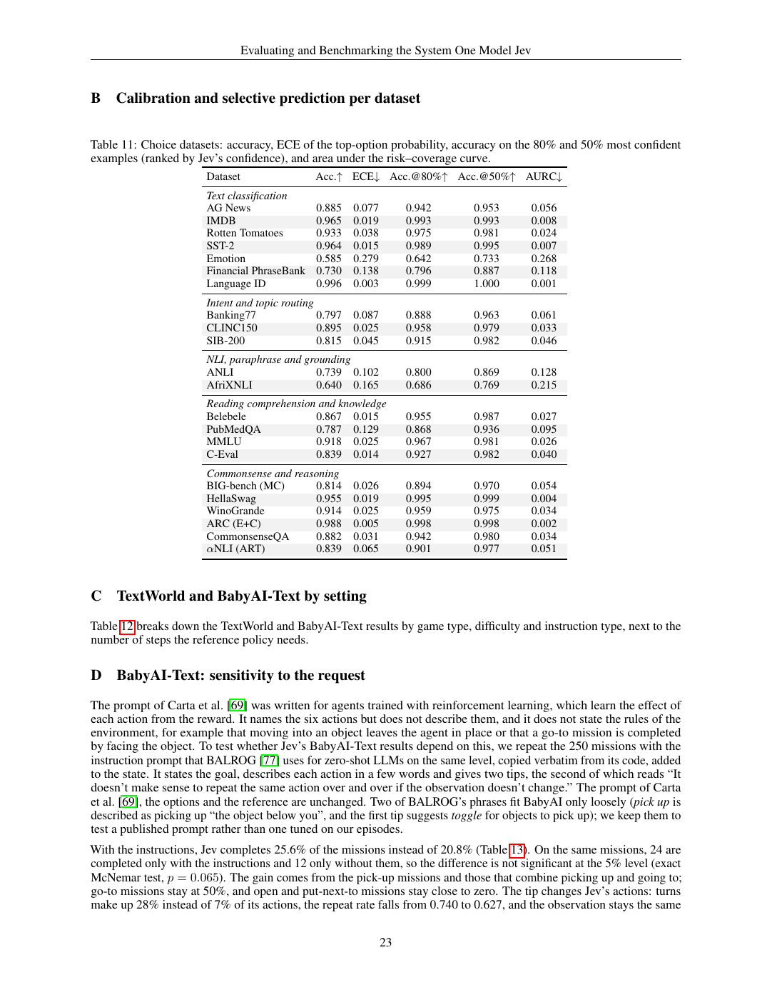
Table 12 · TextWorld/BabyAI difficulty breakdownتفکیک سختی TextWorld/BabyAI
Original table and all printed entries are retained in the source view. Read its caption, units, sample size and footnotes together; values are not estimated from plots.جدول اصلی و تمام مقادیر چاپشده در نمای منبع حفظ شدهاند. عنوان، واحد، اندازه نمونه و پانوشت را با هم بخوانید؛ مقداری از نمودار تخمین زده نشده است.
Table 12 · PDF p. 24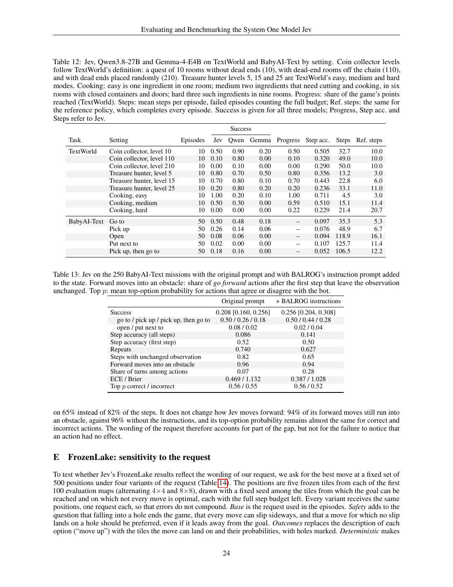
Table 13 · BabyAI instruction sensitivityحساسیت دستور BabyAI
Original table and all printed entries are retained in the source view. Read its caption, units, sample size and footnotes together; values are not estimated from plots.جدول اصلی و تمام مقادیر چاپشده در نمای منبع حفظ شدهاند. عنوان، واحد، اندازه نمونه و پانوشت را با هم بخوانید؛ مقداری از نمودار تخمین زده نشده است.
Table 13 · PDF p. 24Table 14 · FrozenLake explicit-outcome sensitivityحساسیت پیامدصریح FrozenLake
Original table and all printed entries are retained in the source view. Read its caption, units, sample size and footnotes together; values are not estimated from plots.جدول اصلی و تمام مقادیر چاپشده در نمای منبع حفظ شدهاند. عنوان، واحد، اندازه نمونه و پانوشت را با هم بخوانید؛ مقداری از نمودار تخمین زده نشده است.
Table 14 · PDF p. 25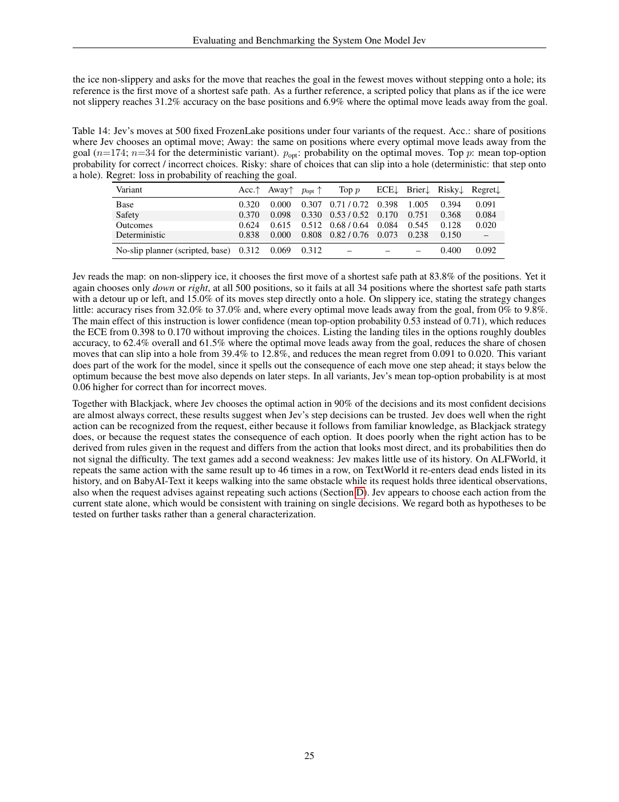
Critical analysis — reviewer assessmentتحلیل انتقادی — ارزیابی مرورگر
Strength: a large reproducible request suite is paired with negative sequential results. Limitation: the cheaper one-pass comparison cannot establish superiority over reasoning-enabledLLMs or physical control; its pooled calibration would be unsafe to import as a universal safety threshold.قوت: مجموعه درخواست بزرگ بازتولیدپذیر با نتیجه منفی ترتیبی همراه است. محدودیت: مقایسه یکعبوری برتری بر LLM استدلالدار یاکنترل فیزیکی رااثبات نمیکند؛ کالیبراسیون تجمیعی آستانه عمومی ایمنی نیست. Source · PDF p. 5Source · PDF p. 8Source · PDF p. 16
The paper reports up to 32k state-plus-question tokens, while the energy-audit manuscript describes64k per request. Keep these as source/version-specific claims; this report does not reconcile them or assert a current API limit.این مقاله سقف ۳۲ هزار حالتبهعلاوهپرسش ومقاله ممیزی ۶۴ هزار دردرخواست توصیف میکند. اینهاادعای منبع/نسخهاند؛ گزارش آنهارایکسان یاسقف API فعلی اعلام نمیکند. Source · PDF p. 3
Role in our researchنقش مقاله در پژوهش ما
Why is it important to our research?چرا برای پژوهش ما مهم است؟
Useful broad evidence on where typed decisions, confidence and single-step success fail to transfer to sequential action. It directly informs our P5 uncertainty and P6 execution design but does not evaluate HEMS.شاهد گسترده مفید درباره عدمانتقال تصمیم نوعدار، اطمینان وموفقیت تکگام به اقدام ترتیبی است. برایعدمقطعیت P5 واجرای P6 مرتبط است، ولی HEMS رانمیسنجد. Source · PDF p. 8Source · PDF p. 13Source · PDF p. 16Source · PDF p. 25
What does it contribute to our research?چه سهمی در پژوهش ما دارد؟
Contributes primitive-specific calibration, separate step/task metrics, encountered-state reference labels, repeat-loop measures and explicit-outcome probes. IndependentNoul outputs are not a substitute for our dependent-cause SCM beliefs.کالیبراسیون اختصاصی نوعپرسش، معیار جداگام/وظیفه، برچسب حالت طیشده، سنجش حلقه تکرار وآزمون پیامدصریح رامیدهد. خروجی Noul مستقل جای باور علتهای وابسته SCM نیست. Source · PDF p. 3Source · PDF p. 8Source · PDF p. 14Source · PDF p. 25
How can we employ it?چگونه از آن استفاده کنیم؟
Proposed use: construct typed state/action contracts with observable prerequisites and Twin-predicted consequences; maintain external progress/history checks; evaluate Persian and English separately; fit calibration on our own held-out scenarios. Test whether Twin consequence summaries help decisions rather than assuming the game result transfers.کاربرد پیشنهادی: قرارداد حالت/اقدام نوعدار باپیششرط مشاهدهپذیر وپیامد پیشبینیشده Twin، بررسی بیرونی پیشرفت/تاریخچه، ارزیابی جدا فارسی/انگلیسی وکالیبراسیون روی سناریوی نگهداشتهشده خودمان. اثرخلاصه پیامد Twin بایدآزموده شود، نه ازبازی تعمیم فرض شود. Source · PDF p. 10Source · PDF p. 14Source · PDF p. 16Source · PDF p. 25
Should we implement it as a baseline?آیا باید آن را بهعنوان خطمبنا پیاده کنیم؟
No need to rerun37 NLP datasets for the main thesis. If Jev is adopted, a constrained Jev-only next-operation selector and anLLM-only selector on identical HEMS options can be adapted component baselines. Preserve independent validation andcompare sequential recovery as well as per-decision accuracy.برایپایاننامه اصلی بازاجرای ۳۷ داده NLP لازم نیست. درصورت انتخاب Jev، انتخابگر محدود Jev تنها و LLM تنها رویگزینه یکسان HEMS پایه مؤلفهای اقتباسیاند. اعتبارسنجی مستقل وحاصل بازیابی ترتیبی درکنار دقت تصمیم حفظ شود. Source · PDF p. 13Source · PDF p. 14Source · PDF p. 16Source · PDF p. 17
Original source pagesصفحات اصلی منبع
PDF page 1
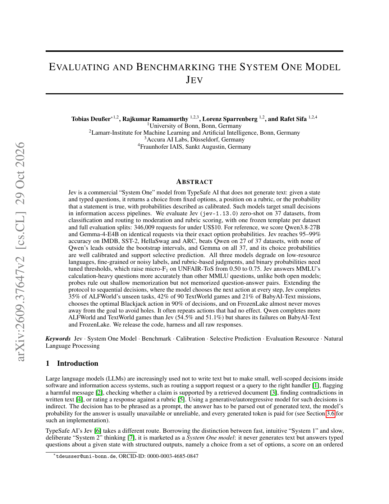
PDF page 2
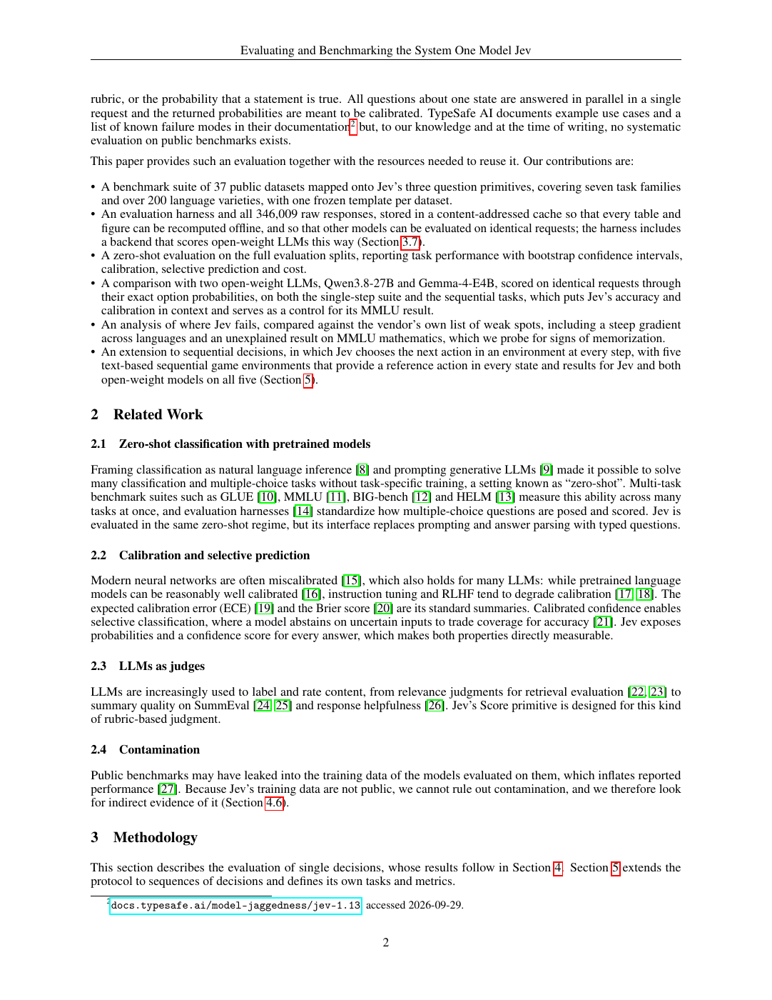
PDF page 3
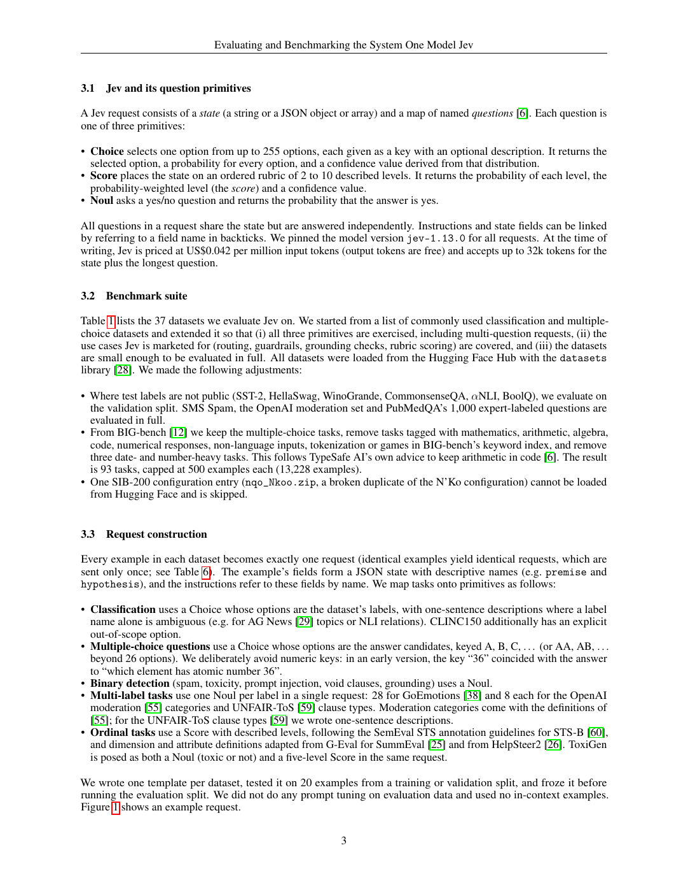
PDF page 5
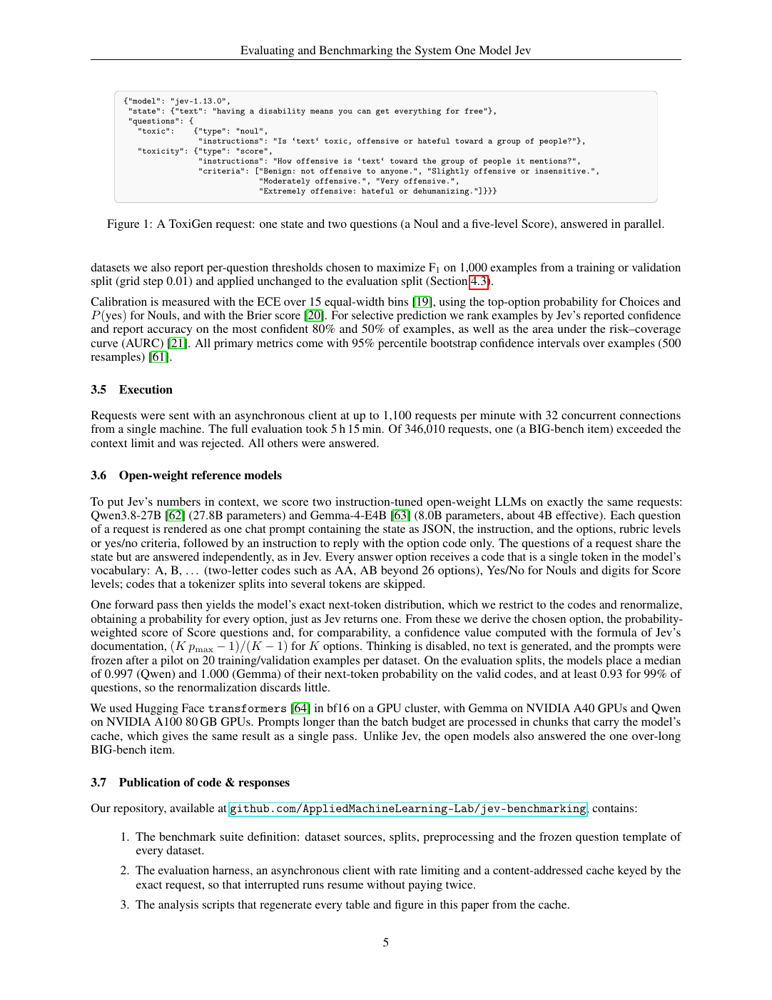
PDF page 6
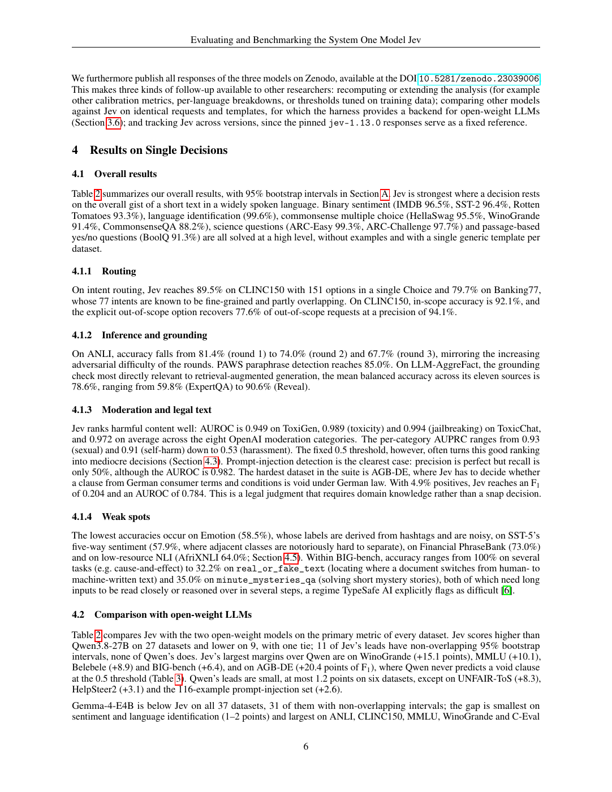
PDF page 8
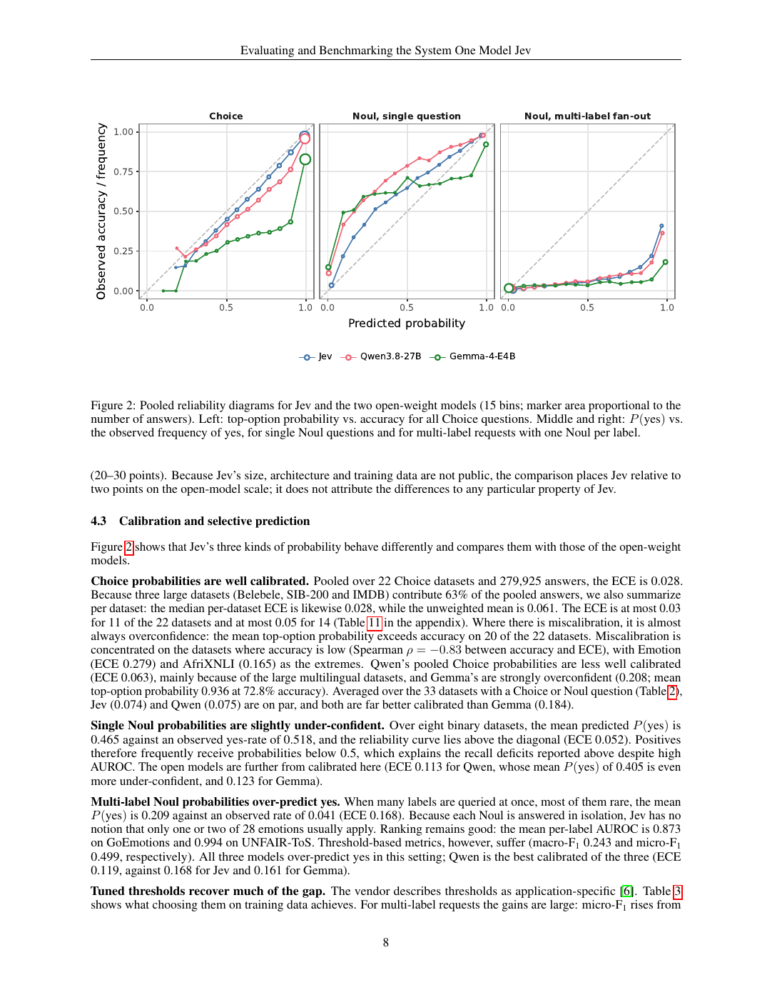
PDF page 11
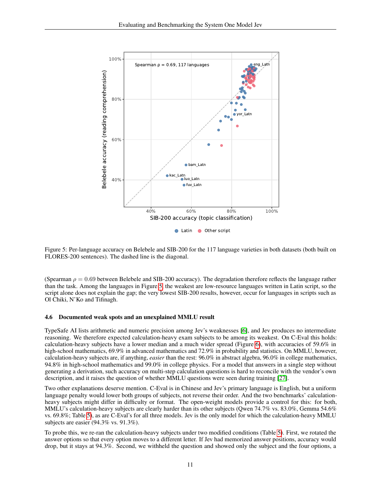
PDF page 16
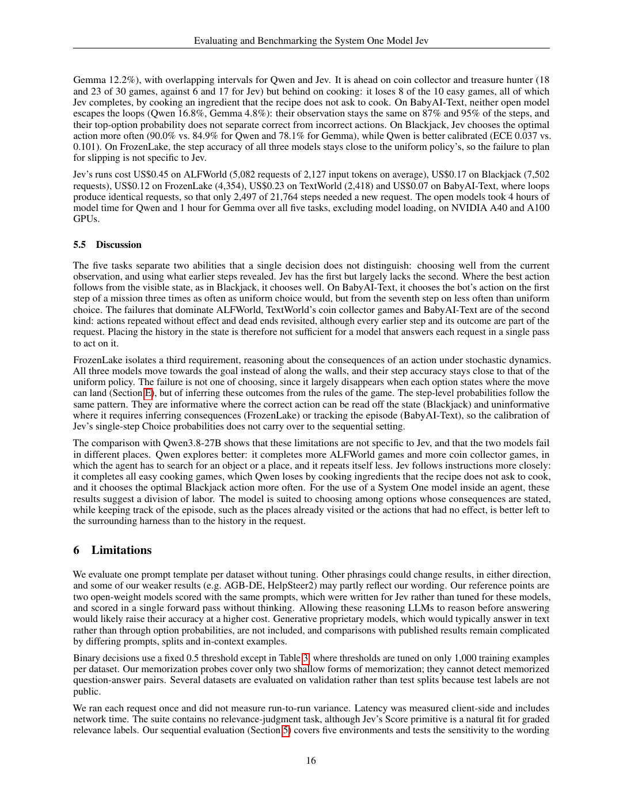
PDF page 17
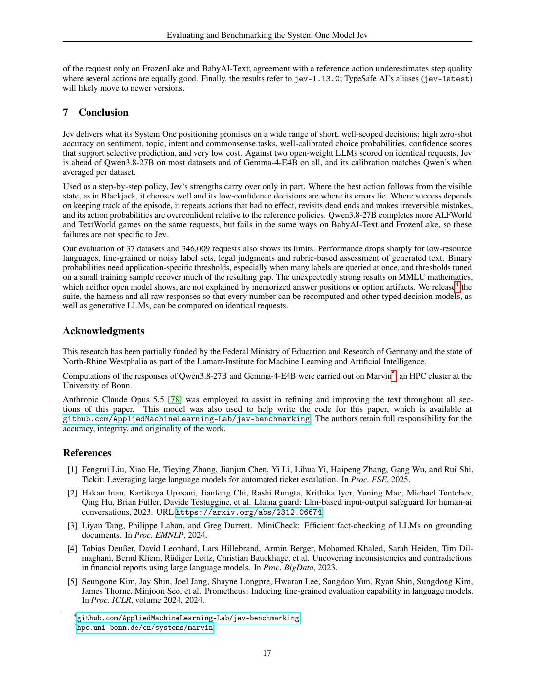
PDF page 18
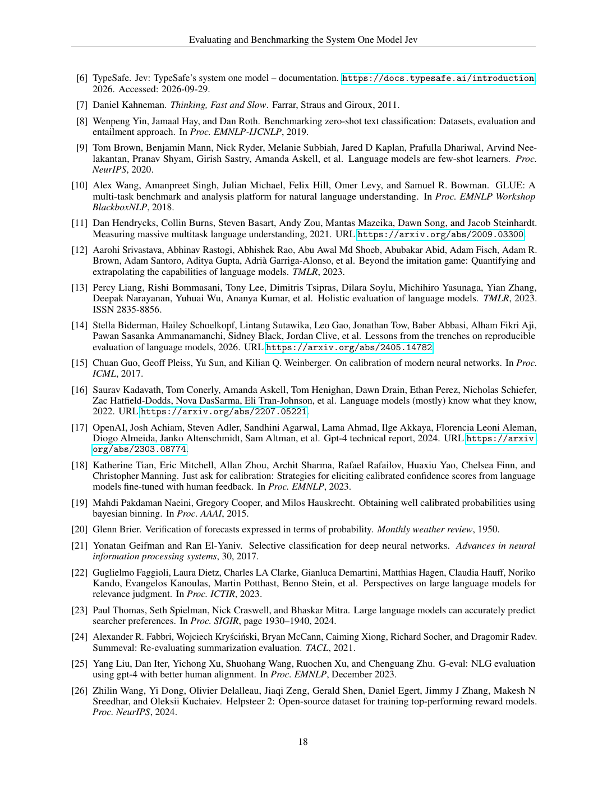
PDF page 19
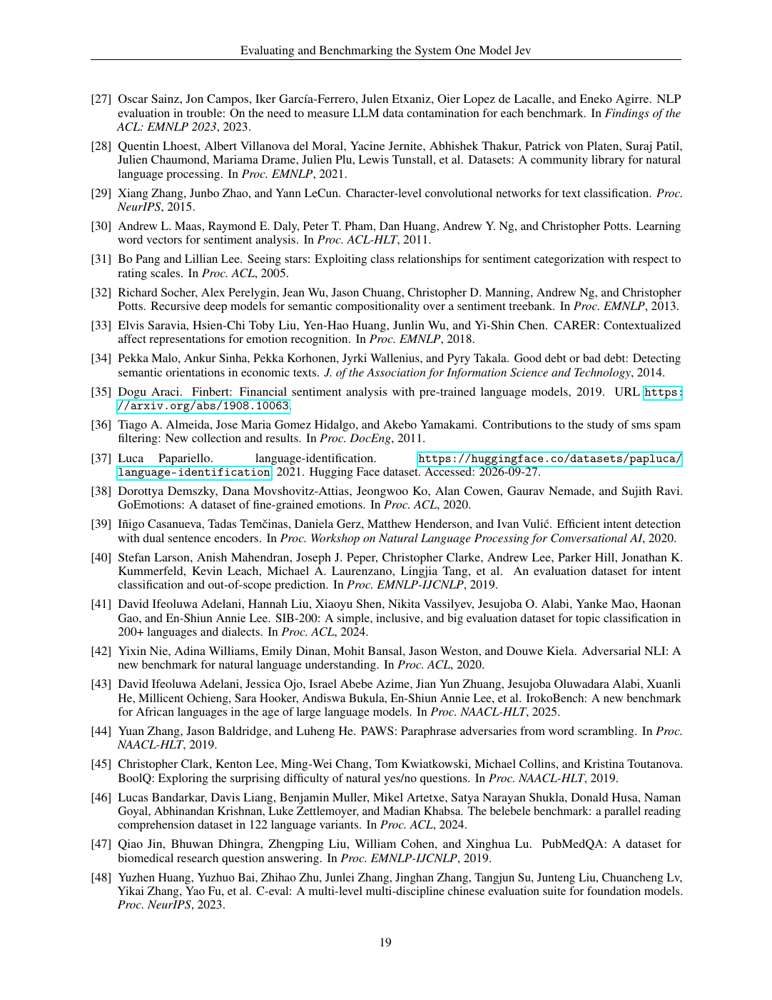
PDF page 20
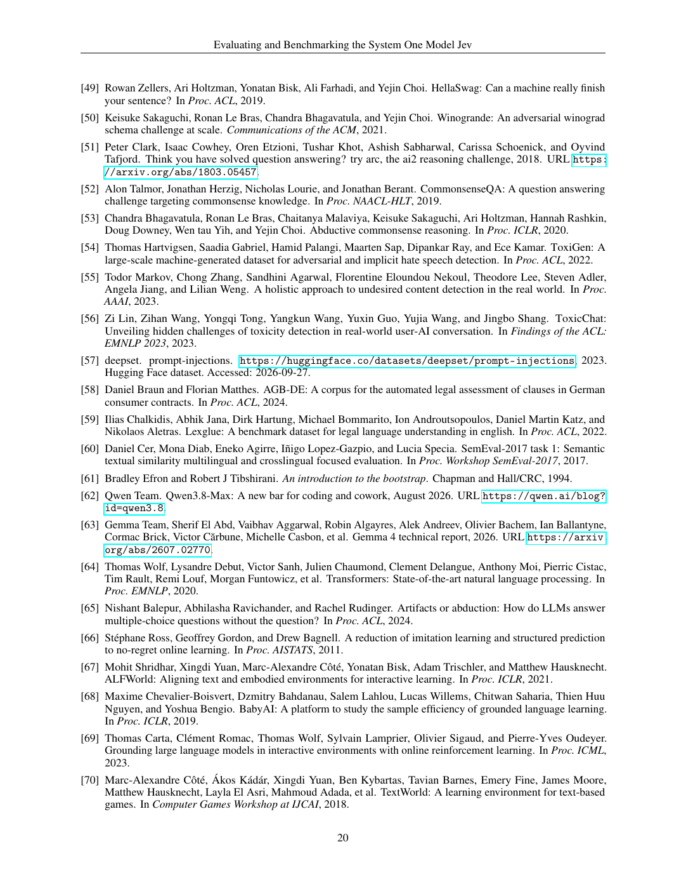
PDF page 21
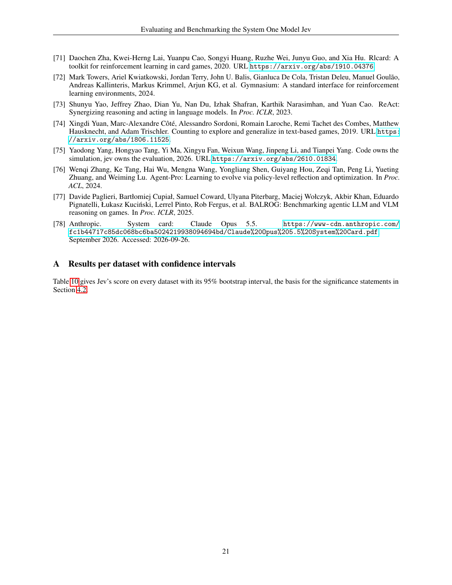
Full bibliographyکتابنامه کامل
Full bibliography transcribed from the source PDF. Original reference pages are the authority for formatting and extraction ambiguities; cited works were not independently analyzed just because they appear here.کتابنامه کامل از PDF منبع استخراج شده است. صفحه اصلی مرجع نگارش و ابهام استخراج است؛ درج منبع به معنی تحلیل مستقل آن اثر نیست.
Bibliography · PDF p. 17Bibliography · PDF p. 18Bibliography · PDF p. 19Bibliography · PDF p. 20Bibliography · PDF p. 21